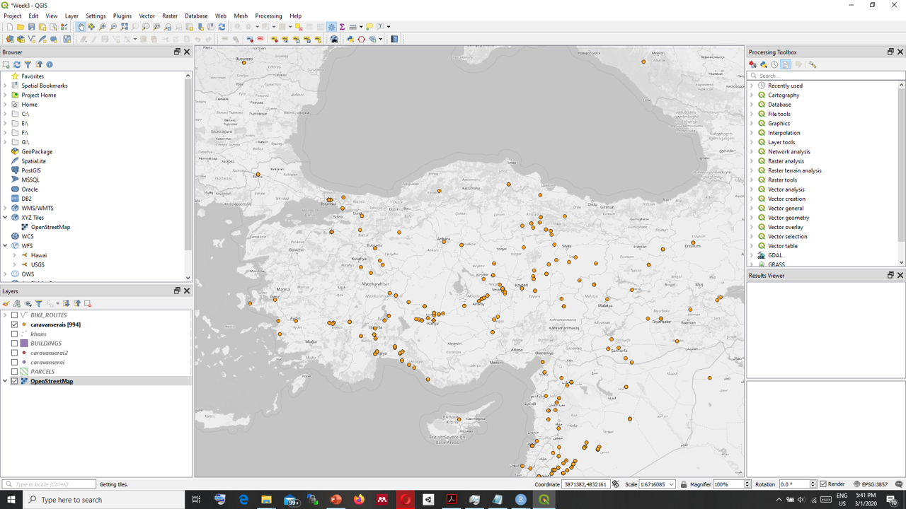

MBL617 Theory and Methods in Digital Heritage
1
Syllabus
1.1
Content
1.2
Aims
1.3
Learning outcomes
1.4
Conduct
1.5
Project
1.6
Weekly Schedule
2
Quick Start to QGIS
2.1
Installing QGIS
2.2
Familiarizing yourself with QGIS Desktop
3
Vector Data
3.1
Types of vector data in QGIS
4
Raster Data
4.1
CRS - Coordinate Reference Systems
4.2
Raster File types
4.2.1
WMS
4.2.2
DEM - Digital Elevation Model
5
3D Maps
6
Styling Data
6.1
Points
6.2
Polylines
6.3
Polygons
6.4
Raster
7
Printing Maps
8
Creating Data
9
Databases
10
Assignment
10.1
Collecting the data & Creating the layer
Published with bookdown
MBL617 Theory and Methods in Digital Heritage
Chapter 2
Quick Start to QGIS
2.1
Installing QGIS
There are two options for installation:
* OSGeo4
* Standalone Installer
2.2
Familiarizing yourself with QGIS Desktop

QGIS GUI
Menu Bar
Toolbars
Panel
Map Canvas
Status Bar